Contents
ES868 – Relatório Lab 9
Identificação de um motor de corrente contínua
Turma A - 15/06/2015
- Augusto Miranda Garcia - 104627
- Guilherme de Oliveira Souza – 117093
- Vinícius Ragazi David - 120258
clear all;
dt1 = 1e-3;
dt = 10e-3;
Ensaio de motor travado
Dado coletado
i1 = load('dados_coletados/corrente_parado_disco1.lvm'); i1_f = medfilt1(i1, 17); n1 = numel(i1); t1 = linspace(0, (n1-1)*dt1, n1)'; plot(t1, [i1 i1_f]); title('Corrente observada no teste com motor travado'); xlabel('Tempo (s)'); ylabel('Corrente (A)'); legend('Original', 'Filtrado');
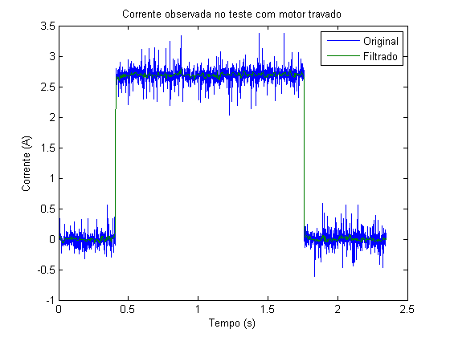
Corrente de regime permanente
I0 = median(i1(i1 > 1)) V = 12; R = V/I0
I0 =
2.6917
R =
4.4581
Ensaio de motor livre
Dado coletado
i2 = load('dados_coletados/corrente_livre_disco1.lvm'); v2 = load('dados_coletados/velocidade_livre_disco1.lvm'); n2 = numel(i2); t2 = linspace(0, (n2-1)*dt, n2)'; plotyy(t2, i2, t2, v2); title('Valores observados no teste com motor livre'); xlabel('Tempo (s)'); legend('Corrente (A)', 'Velocidade (rad/s)');
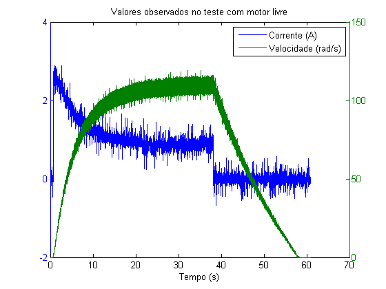
Filtrado
i2_f = smooth(medfilt1(smooth(i2, 5), 17), 5); v2_f = smooth(medfilt1(smooth(v2, 5), 17), 5); plotyy(t2, i2_f, t2, v2_f); title('Valores observados no teste com motor livre'); xlabel('Tempo (s)'); legend('Corrente (A)', 'Velocidade (rad/s)');
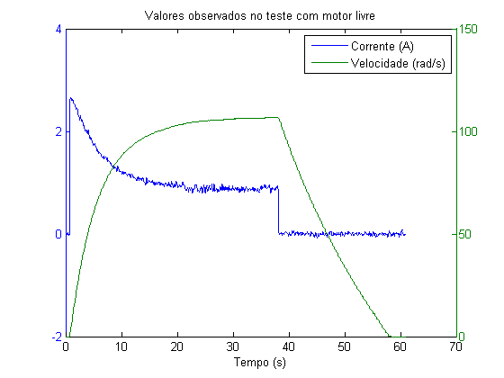
Regime permanente
[v2_inf, index_inf] = max(v2_f) i2_inf = i2_f(index_inf-1) K = (V - R*i2_inf)/v2_inf
v2_inf =
106.9247
index_inf =
3747
i2_inf =
0.8808
K =
0.0755
Ensaio com disco 1 (disco 2 travado)
vd1 = load('dados_coletados/velocidade_disco2_travado.lvm'); pd1 = cumsum(vd1)*dt; pd1 = pd1 - pd1(end); nd1 = numel(pd1); td1 = linspace(0, (nd1-1)*dt, nd1)'; picosd1 = [77, 92, 109, 125, 140, 156, 172, 187, 203, 218, 232]'; p_picosd1 = pd1(picosd1+1); plot(td1, pd1, picosd1*dt, p_picosd1, 'o'); title('Valores observados no teste com disco 1'); xlabel('Tempo (s)'); legend('Posição (rad)'); xlim([0, 3]);
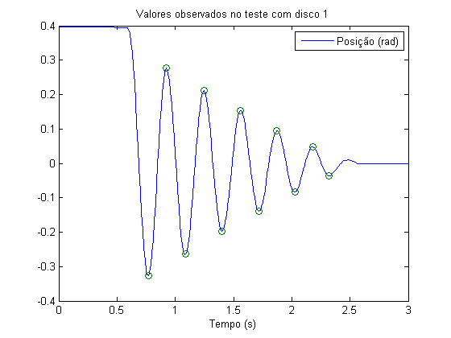
Cálculo de
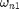
e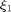
m = numel(picosd1); omega_d1 = (m-1)*pi/sum(diff(picosd1*dt)) tg = (m-1)*pi/sum(diff(log(abs(p_picosd1)))); xi_1 = sqrt(1/(tg*tg+1)) omega_n1 = omega_d1/sqrt(1-xi_1*xi_1)
omega_d1 =
20.2683
xi_1 =
0.0708
omega_n1 =
20.3193
Ensaio com disco 2 (disco 1 travado)
vd2 = load('dados_coletados/velocidade_disco1_travado.lvm'); pd2 = cumsum(vd2)*dt; pd2 = pd2 - pd2(end); nd2 = numel(pd2); td2 = linspace(0, (nd2-1)*dt, nd2)'; picosd2 = [63, 79, 95, 111, 127, 142, 160, 174, 191, 208, 223, 239, 255, 272, 287, 303, 319, 336, 351, 367, 383, 399, 416, 433, 448, 463, 478, 495, 510, 527, 542]'; p_picosd2 = pd2(picosd2+1); plot(td2, pd2, picosd2*dt, p_picosd2, 'o'); title('Valores observados no teste com disco 2'); xlabel('Tempo (s)'); legend('Posição (rad)'); xlim([0, 7]);
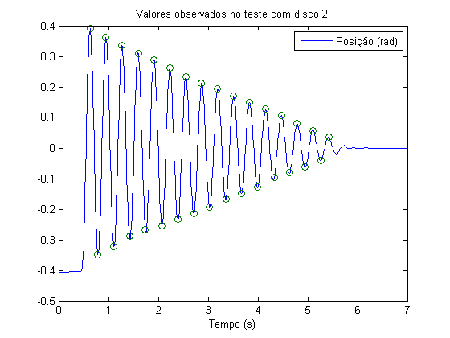
Cálculo de
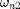
e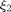
m = numel(picosd2); omega_d2 = (m-1)*pi/sum(diff(picosd2*dt)) tg = (m-1)*pi/sum(diff(log(abs(p_picosd2)))); xi_2 = sqrt(1/(tg*tg+1)) omega_n2 = omega_d2/sqrt(1-xi_2*xi_2)
omega_d2 =
19.6759
xi_2 =
0.0255
omega_n2 =
19.6823
Parâmetros dos discos
Das equações (5) a (9) do pdf:
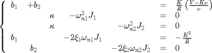
parametros = [... 1, 1, 0, 0, 0; ... 0, 0, 1, -omega_n1^2, 0; ... 0, 0, 1, 0, -omega_n2^2; ... 1, 0, 0, -2*xi_1*omega_n1, 0; ... 0, 1, 0, 0, -2*xi_2*omega_n2]\[K/R*(V-K*v2_inf)/v2_inf; 0; 0; -K^2/R; 0]; b1 = parametros(1) b2 = parametros(2) k = parametros(3) J1 = parametros(4) J2 = parametros(5)
b1 =
1.0651e-04
b2 =
5.1545e-04
k =
0.1989
J1 =
4.8176e-04
J2 =
5.1345e-04
Modelo de estado
Definindo as variáveis de estados:
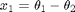
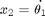
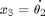
Tem-se modelo de estados
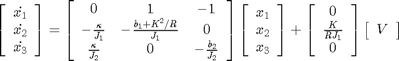
A = [0, 1, -1; -k/J1, -(b1+K^2/R)/J1, 0; k/J2, 0, -b2/J2]; B = [0; K/(R*J1); 0]; C = eye(3); planta = ss(A, B, C, 0)
planta =
a =
x1 x2 x3
x1 0 1 -1
x2 -412.9 -2.875 0
x3 387.4 0 -1.004
b =
u1
x1 0
x2 35.15
x3 0
c =
x1 x2 x3
y1 1 0 0
y2 0 1 0
y3 0 0 1
d =
u1
y1 0
y2 0
y3 0
Continuous-time state-space model.
Comparação teórico x real
v2_t = V*(i2_f>0.5); [Y, T] = lsim(planta, v2_t, t2); plot(T, Y(:,2), t2, v2_f); title('Velocidade disco 1 (rad/s)'); legend('Teórico', 'Experimental'); xlabel('Tempo (s)');
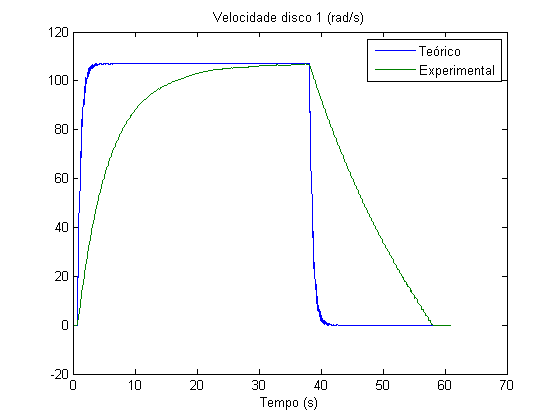